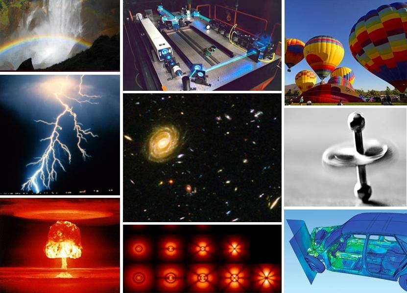
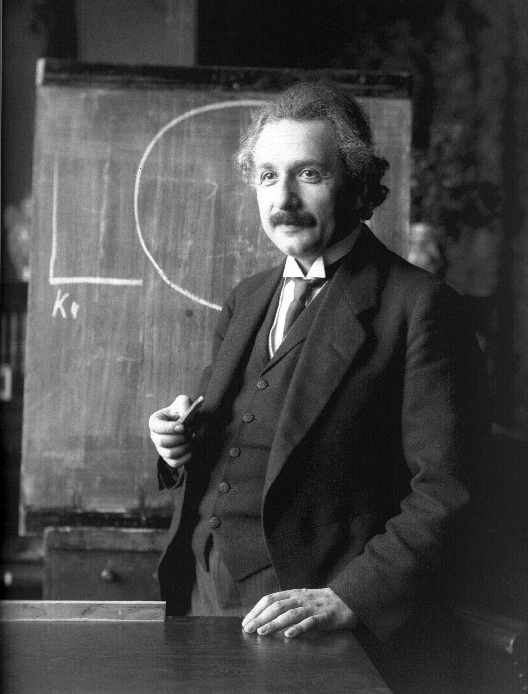

Evidencia Visual y Demostración Práctica
A continuación se muestra la imagen de referencia (haz clic sobre ella para consultar más información en Wikipedia) y la autograbación del experimento:


«El objetivo de la ciencia es, por una parte, una comprensión, lo más completa posible, de la conexión entre las experiencias de los sentidos en su totalidad y, por otra, la obtención de dicho objetivo usando un número mínimo de conceptos y relaciones primarios»
Video de Movimiento D1
Fundamentos Teóricos del Movimiento
La cinemática unidimensional analiza cómo cambian la posición y el tiempo de un cuerpo en una trayectoria en línea recta. Es fundamental entender las fórmulas del movimiento rectilíneo en la física básica.
Variables clave del movimiento
- Posición (x): Ubicación espacial del objeto en un instante dado respecto a un origen.
- Velocidad (v): Ritmo de cambio de la posición por unidad de tiempo.
- Aceleración (a): Variación de la velocidad experimentada en cada unidad de tiempo.
Para profundizar en la teoría formal y ver ejemplos de problemas resueltos, consulta el recurso académico oficial en WebAssign - Cinemática en una Dimensión.
Metodología y Procedimiento Experimental
Para realizar el registro y análisis del movimiento en el video, se siguieron estos pasos detallados:
- Definir e implantar el sistema de referencia espacial inicial.
- Medir con precisión el tiempo de desplazamiento utilizando instrumentos cronometrados.
- Volcar y contrastar los datos numéricos obtenidos en la matriz de resultados.
Opinión y Reflexión Sobre la Experiencia
En mi opinión, el estudio de la cinemática unidimensional permite comprender de una manera más clara cómo la matemática y la física se relacionan para describir situaciones de la vida cotidiana. La sesión y la experiencia experimental muestran que conceptos como posición, velocidad y aceleración no son solamente fórmulas, sino herramientas que permiten interpretar y explicar el movimiento de un objeto de manera objetiva.
Considero que el registro de datos durante el experimento es fundamental, porque permite comparar lo observado en la práctica con los resultados obtenidos mediante los cálculos. De esta manera, la página web se convierte en un recurso que facilita la organización de la información, la consulta de los conceptos y la reflexión sobre los resultados.
Además, esta experiencia permite desarrollar habilidades importantes como la observación, la medición, el análisis de datos y la formulación de conclusiones. Para mí, aprender física mediante una actividad experimental hace que los contenidos sean más significativos, ya que permite pasar de la teoría a una situación concreta y comprobar cómo se comportan realmente las magnitudes físicas.
Finalmente, considero que el uso de recursos digitales junto con la experimentación favorece un aprendizaje más activo e interactivo, porque el estudiante no solamente recibe información, sino que también observa, registra, analiza y construye sus propias conclusiones a partir de la evidencia obtenida.
Matriz de Magnitudes Físicas
| Magnitud | Símbolo | Unidad S.I. |
|---|---|---|
| Desplazamiento | d o x | Metros (m) |
| Velocidad | v | Metros por segundo (m/s) |
| Aceleración | a | Metros por segundo al cuadrado (m/s²) |
Contacto y Retroalimentación
Envía tus comentarios u opiniones sobre el desarrollo de la práctica: